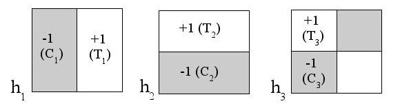

|
|
www.Ranklets.netRanklets are a complete family of multiscale rank features characterized by Haar-wavelet style orientation selectivity. Closely related to the Wilcoxon rank sum test, ranklets are computationally efficient and admit an intuitive interpretation in terms of pairwise comparisons of pixel intensity values.  In the following you will find information on the definition of ranklets, their computation and sample pattern recognition applications.
For more on applications and recent developments, check out the Bibliography |
|
| Updated 07 Feb 2023 | ||
| Maintained by Fabrizio Smeraldi | This website was written in Zim ! |